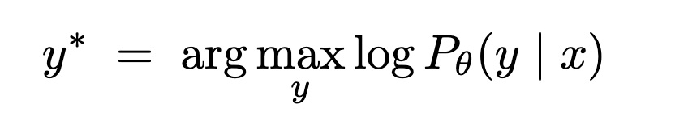
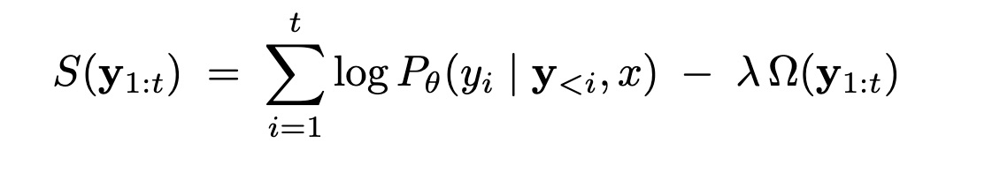
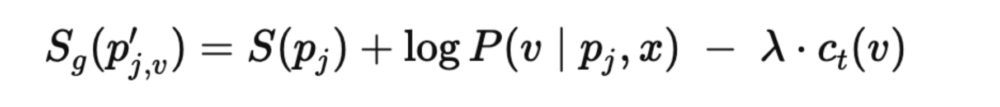
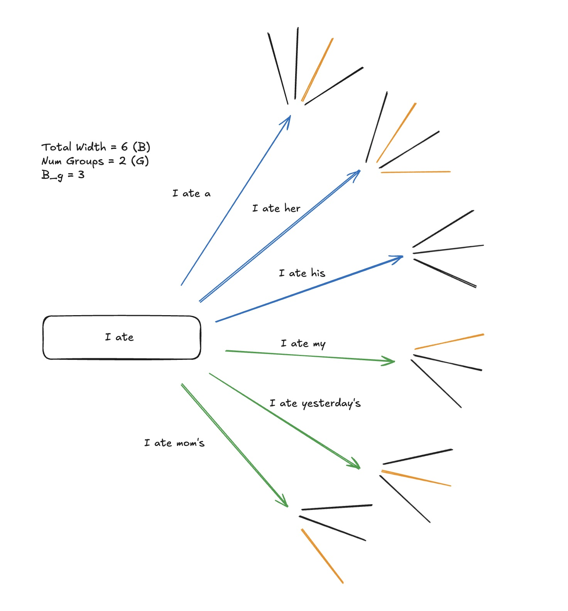
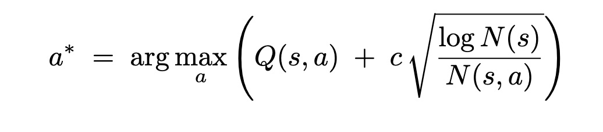
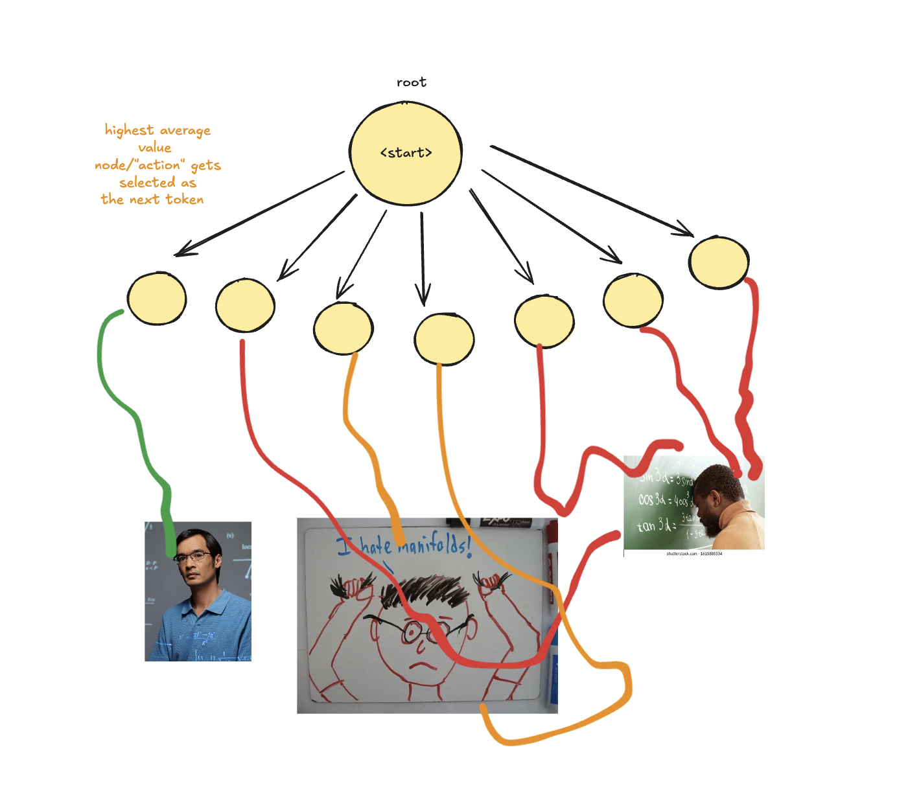

LLM Inference: Decoding Algorithms
Jan 2026
The goal of mode seeking decoding methods is to ask: Given our input x (evidence) and the model’s parameters (prior), what is the single most likely output? This is because we believe in the model’s scoring of its own outputs. Decoding is therefore an approximate search for argmaxy log P(y|x).
The most naive way of doing this is through greedy decoding: choosing the single most likely token at each step. This is exactly what we want for a single token output, but for a longer sequence, this doesn’t necessarily yield the highest probability output. Greedy decoding is also often susceptible to repetition traps.
[Insert image]
Beam Search
One alternative is beam search, which instead maintains a few options so we don’t miss a high probability completion “hidden” behind a low probability prefix. Specifically, it's a best-first over prefixes with pruning, typically using a sum of log probabilities and some form of length normalization.
The general procedure is:
- Set a beam width k
- START: Choose top k highest probability tokens to start the beam search
- EXPAND: Choose top k highest probability continuations for each beam (k2 options)
- PRUNE: Cutdown to k highest scoring continuations according to a score function (based on log probs)

However, beam search often produces a set of outcomes that tend to be pretty similar. Meaning, that we might want to introduce some diversity in completions.
Hamming Diversity
In 2016, Vikayakumar (https://arxiv.org/abs/1610.02424) altered the EXPAND step, saying that we just need each set of outputs to be different from what we've seen so far within the active group. We select a total beam width of B (the total beams kept overall) and G (number of groups) so each group has Bg = B / G.
They therefore defined Hamming diversity to subtract a penalty that depends on what earlier groups selected at the same time step.
where ct(v) is the count of how many times token v was chosen at position t by groups 1 , ..., g-1.
Each group maintains Bg beams throughout decoding. At each time step t, Group 1 expands its Bg beams and keeps the best Bg candidates, essentially standard beam search. Group 2 expands its Bg beams, but when scoring candidates it applies the diversity penalty based on what group 1 selected at time t, keeping the best Bg candidates. Group 3 does the same, penalizing overlap with groups 1 and 2 at step t, etc.
Cumulative diversity
A variant of this is cumulative diversity which doesn’t have explicit groups. At each timestep t, the full candidate pool (up to B x K next-token candidates). The next beam is set greedily on-by-one, where each new selection is penalized if it chooses a token that has already been chosen at timestep t by selected beams in that selection round.
Cumulative diversity
A variant of this is cumulative diversity which doesn’t have explicit groups. At each timestep t, the full candidate pool (up to B x K next-token candidates). The next beam is set greedily on-by-one, where each new selection is penalized if it chooses a token that has already been chosen at timestep t by selected beams in that selection round.
n-gram Diversity
An n-gram diversity penalty is similar to cumulative, except for the fact that we penalize based on an n-gram occurring at any timestep in selected beams. To encourage diverse beams, we can penalize a candidate beam if its newly-formed last n-gram matches an n-gram that appears in an already-selected beam.
Monte Carlo Tree Search (MCTS)
Instead of allocating a fixed beam width at each step, MCTS asks: given a compute budget B search iterations, how should we allocate exploration across prefixes to find a high-quality completion? It does this by estimating the downstream value of choosing a token now.
In decoding, each node is a prefix (conditioning on the fixed prompt x), and each edge corresponds to the next token prediction a. Because the vocabulary is large, available actions are typically restricted to top-k or top-p. MCTS maintains visit counts N(s), N(s,a) and value estimates Q(s,a) (the empirical mean return of simulations that passed through the edge (s,a)).
In each iteration:
- SELECT: Starting from the root, repeatedly choose the child that maximizes an exploration-exploitation rule, favouring actions with high Q(s,a) but also occasionally trying rarely-sampled actions.
- EXPAND: When reaching a prefix with untried actions, add one (or several) child edges for promising next tokens
- EVALUATE: Estimate the value of the new leaf either by rolling out with a rollout policy until a terminal state and scoring the final completion, or by using a learned value model to score the lead directly. How you roll out is more of a design choice (e.g. sample from top-p/top-k, greedy-decoding, etc)
- BACKUP: Propagate the obtained scalar value back along the selected path, updating N and Q.
After B simulations, you choose the root action (next token) using something like most visited or highest value path. When the next token is chosen, the root can be moved down to the chosen child node to re-use the subtree already explored under that child. Each run of MCTS is basically a very convoluted way to explore the possible lives of the next token and estimate its value accurately. An analogy is Black Mirror’s “Hang the DJ” episode, where they simulated dates between different individuals repeatedly, to prove if it would be the perfect match on average.
Since the Value Estimate Function can be noise/biased, MCTS uses repeated simulations to refine these value estimates.
I ran a mini-experiment implementing these search strategies using Qwen2.5-Math-7B-Instruct and Qwen2.5-Math-PRM-7B as the process reward model on problems from Level 5 MATH Dataset and detail the results below. Running a forward pass to obtain the top-k logits ended up being very expensive so I switched to VLLM for more efficient inference.
Code Availability here.